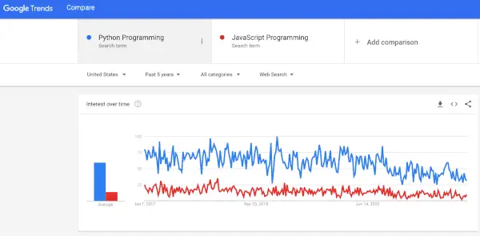

Python vs JavaScript popularity, last 5 years.
I know this will probably anger a few folks who are currently investing in learning JavaScript, and if you are, don’t worry about it. You didn’t make a mistake. My first language was C, and I turned out allegedly OK.
Still, if you haven’t started yet, I would argue that Python is the ideal programming language to start with. There are several reasons for this.
Python has more open jobs. One of the things I like to do from time to time is query Indeed to see who’s hiring for what. Today’s (nation-wide) results? For JavaScript: 122,616. For Python: 185,613. Now obviously that’s a snapshot, and the exact results will vary from minute to minute, but as of now that works out to a ratio of just over 3 Python jobs for every 2 in JavaScript.
Python is more versatile. For all the talk of “Full-Stack JavaScript”, there are still lots of sites running Java or Python or C# or PHP on the back end. So JavaScript is still mainly a front end and mobile framework in many environments. There’s nothing wrong with that if you have your heart set in that direction, but many newcomers to the field might not know where their first break is going to come from, and so might benefit from having more choices. Python supports back end development, scientific computing, data science (as well as data engineering), serverless computing (which in fairness JavaScript also does well), DevOps automation, test automation, and you-name-it automation.
Python’s object-oriented features are more mainstream. It shares the notion of class based inheritance with most other object-oriented languages, including Java, C#, C++, and many others. ECMAScript 6 and TypeScript notwithstanding, JavaScript’s prototype based inheritance is pretty much a one-off, unless you want to count Lua and a few other outliers. Of course, you can always learn both, but again, JavaScript is in a niche here (yes, I know, as niches go, it’s pretty big).
TypeScript, Kotlin, CoffeeScript, etc.-script. JavaScript is probably the only language since Assembly that has spawned so many attempts to escape it. Python programmers are happy coding in Python, so they code in Python. And yes, I get it – I hated “whitespace as program structure” when I first saw it, too. But any modern editor / IDE can both guess and enforce the correct indentation without any problem whatever. So in practice it’s not a big deal.
To be sure, JavaScript is far more versatile and ubiquitous if your goal is to do any kind of UI development. JavaScript excels in the one area that Python is worst at, really.
Still, I think Python’s versatility as well as its popularity make it a better first choice. And if it doesn’t work out, you can always change your mind and learn how to compile TypeScript to JavaScript.